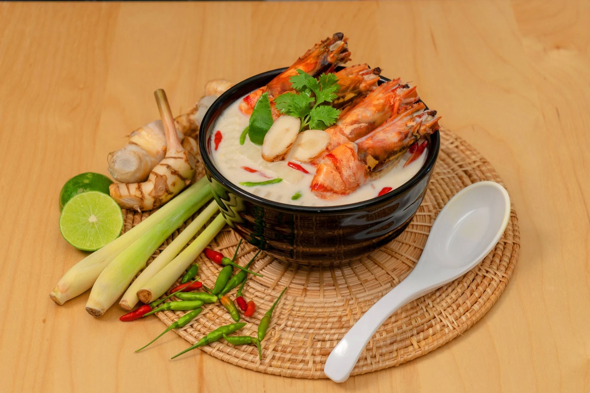

ประโยชน์ต้มข่า
- ข่า ช่วยขับลม บรรเทาอาการท้องอืด ท้องเฟ้อ
- ตะไคร้ ช่วยลดความดันโลหิต ลดคอเลสเตอรอล
- ใบมะกรูด ช่วยบำรุงหัวใจ ลดความเครียด
- พริก ช่วยกระตุ้นการไหลเวียนโลหิต ลดความเสี่ยงโรคหัวใจ
- เห็ด ช่วยเสริมสร้างภูมิคุ้มกัน ลดความเสี่ยงโรคมะเร็ง
ส่วนประกอบ
- เนื้อไก่ (หั่นชิ้นพอดีคำ) 300 กรัม
- เห็ด (ตามชอบ) 150 กรัม
- ข่า (หั่นแว่น) 50 กรัม
- ตะไคร้ (หั่นท่อน) 30 กรัม
- ใบมะกรูด (ฉีก) 5 ใบ
- พริกขี้หนู (ทุบ) 5 เม็ด
- กะทิ 2 ถ้วย
- น้ำปลา 2 ช้อนโต๊ะ
- น้ำมะนาว 2 ช้อนโต๊ะ
- น้ำตาลปี๊บ 1 ช้อนโต๊ะ
ประโยชน์ที่จะรับ
| ส่วนประกอบ |
พลังงาน (kcal) |
โปรตีน (g) |
ไขมัน (g) |
คาร์โบไฮเดรต (g) |
| เนื้อไก่ |
250 |
30 |
10 |
0 |
| เห็ด |
50 |
3 |
0.5 |
5 |
| กะทิ |
300 |
3 |
30 |
5 |
| สมุนไพร |
30 |
1 |
0.5 |
5 |
| เครื่องปรุง |
50 |
1 |
0 |
10 |
| รวม |
680 kcal |
38 g |
41 g |
25 g |
วิธีการทำ
- ตั้งหม้อ ใส่กะทิ ข่า ตะไคร้ ใบมะกรูด และพริกขี้หนู ต้มให้เดือด
- ใส่เนื้อไก่และเห็ดลงไป ต้มให้สุก
- ปรุงรสด้วยน้ำปลา น้ำมะนาว และน้ำตาลปี๊บ คนให้เข้ากัน
- ตักเสิร์ฟร้อน ๆ พร้อมข้าวสวย